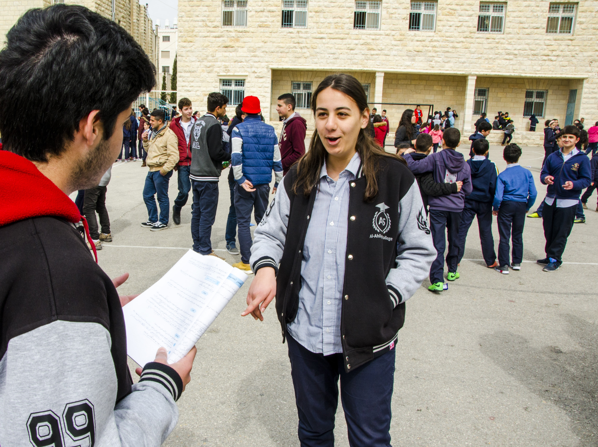
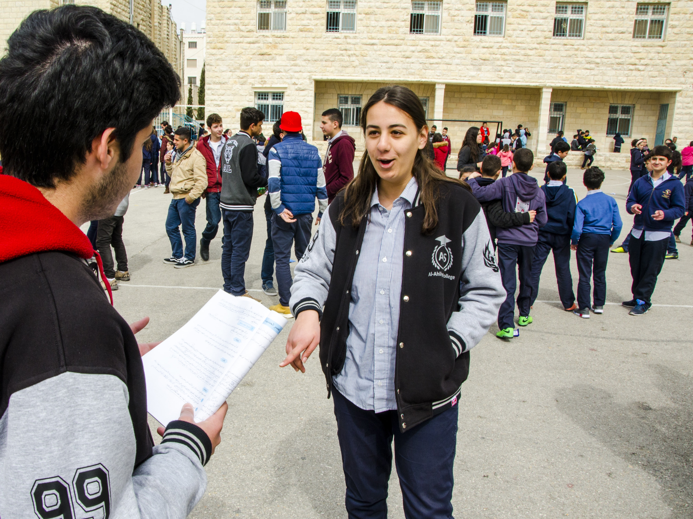
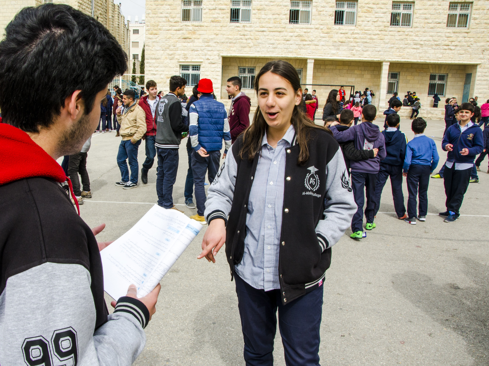

Listen in fusHa
Listen in a'amiyya
Before beginning this activity, model the kind of language you want to see students using, with examples not in the activity, using questions to involve the students. At first, students should focus on listening rather than producing complete sentences or phrases. After modeling several times, you may ask students to begin to respond in phrases or sentences.
مثال:
الأستاذ: أين مدينة لوس آنجلس؟ هل مدينة لوس آنجلس في ولاية فلوريدا؟
الطلاب: لا.
الأستاذ: لا، مدينة لوس آنجلس ليست في ولاية فلريدا. أين مدينة لوس آنجلس؟
الطلاب: كاليفورنيا.
الأستاذ: نعم، مدينة لوس آنجلس في ولاية كاليفورنيا.
وما إلى ذلك.
Listen in fusHa
Listen in a'amiyya
Model the creation of a fake identity for your students.
مثال:
الأستاذ: اسمي....مايكال جاكسون! من أين أنا؟ أنا من مدينة غاري في ولاية إنديانا.
Listen in fusHa
Listen in a'amiyya
Below are some suggested activities to help students memorize the numbers (1-10 and later 11-20) and internalize them.
One way to introduce this activity is to act out or show pictures of some type of emergency, such as a car crash, then take out your phone and ask students what number to call.
Then, if you have students who are familiar with other countries, you can ask them what number they would call in those countries.
مثال:
الأستاذ: ما رقم الطوارئ في أمريكا؟
يشير إلى هاتفه وإلى صورة حادث سيارة
الطلاب: تسعة واحد واحد.
الأستاذ: تخيّلوا أنني في كندا. ما رقم الطوارئ في كندا؟ تخيّلوا أنني في المكسيك. ما رقم الطوارئ في المكسيك؟Students do not need to memorize the phrase رقم الطوارئ but can understand it in context.
You could also introduce the activity by showing a clip from a video on YouTube. For example, you could search for the video وزارة الصحة رقم الطوارئ and show a few seconds that illustrate the main idea.
Listen in fusHa
Listen in a'amiyya
Because introducing the numbers 11-20 at this point is intended to serve the communicative purpose of asking and answering questions about ages, we have chosen to include just those number forms as they appear in this context.
In the recordings for the MSA numbers, we have recorded the grammatically correct number forms (عمري ثلاث عشرة سنة) even though many speakers use something closer to the dialect form even when speaking MSA (عمري ثلاثة عشر سنة).
If you are working with students younger than 11 or older than 20, adapt the material to teach them what they need to know.
Because most students will not have learned all of the letters yet, and because the focus is on spoken communication at this point, we also chose to not spell out the numbers. If you are working with students who know all the letters, you may wish to teach them the spellings of these numbers. However, we suggest you use caution in order to not be sidetracked teaching grammar or rules that do not support communicative skills. Besides the complicated number agreement rules in MSA, dialect numbers have unconventional (and varied) pronunciations (أربعطعشر etc.) and, when stated independently (when counting 11, 12, 13, etc.), do not include the final ر: (اِحْدَعِش، اثْنَعِش، ثلاطَّعِش، أربعطعش).
To introduce this activity, you could show students your drivers’ license and ask students questions about what age you can drive. Use images and body language to convey the idea to students without using English.
مثال:
الأستاذ: هذه رخصة القيادة يشير إلى رخصة القيادة. ما عمر القيادة؟ يمثّل قيادة سيارة. كم عمرك؟ يشير إلى طلاب قد يكون عمره تحت 16 سنة. الطالب: 14 سنة. الأستاذ: عندك رخصة القيادة؟ يشير إلى رخصة القيادة. الطالب: لا. الأستاذ: لا، عمر القيادة 16 سنة، صحيح؟ ما عمر القيادة في كندا؟ هل يعرف أحد...؟ وما إلى ذلك.Students don’t yet know how to give others’ ages, but you can ask them questions such as كم عمره؟ and point to the character you are talking about; students can answer in a phrase rather than a complete sentence. For example, a student might say خمسة عشر سنة.
You can also ask students to re-watch ياسمين وتغريد to listen for Yasmine’s age.
Use the suggested phrase below, في أي عمر...؟ as you introduce the activity so that students can become accustomed to hearing the phrase. Students do not need to know how to say all of these items in Arabic; project these images or images of other activities on a screen. Point to them and say في أي عمر...؟
To help students understand the activity more thoroughly, you give different imaginary ages for yourself and ask the students if this is a good age for that activity (again, point to the activities rather than naming them in Arabic to help students focus on the most important language).
Cut out the strips, shuffle very well and distribute to students in your class. You can reuse them if your class size exceeds the list here. Be sure to model the interaction you would like to see with a strong student.
We have chosen to only include a small number of reading and writing activities in the first few chapters of the textbook. Many teachers proceed at very different paces with the alphabet: some may finish it within a few weeks, while others may teach it over the course of an entire year. We encourage you to make the choices that suit your school and to supplement the activities in this book as needed if your class is moving quickly with the alphabet.
For this activity, tailor the task you give your students to their level.
Sample tasks:
If you have students at markedly different levels with the alphabet in your class, you may choose to differentiate by assigning different tasks to different students.
Photos from the lesson.

If your class is not in the US or you have students who do not consider themselves to be from the US, please tailor this part of the lesson to fit your class demographics and introduce vocabulary that is relevant to them. For example, eliminate “state” and introduce vocabulary that best describes how they might locate themselves.
If you’d like to expose your students to some Arabic music, here are a few songs that have repeated use of the new pronouns in this lesson. You can have students snap their fingers or raise their hands each time they hear a pronoun. Or to make it more challenging, they can point to themselves when hearing “I” or to a male or female student when they hear “you.”